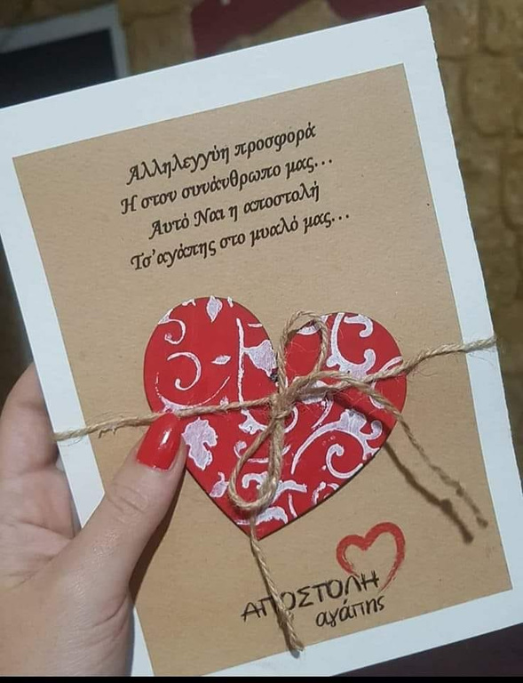
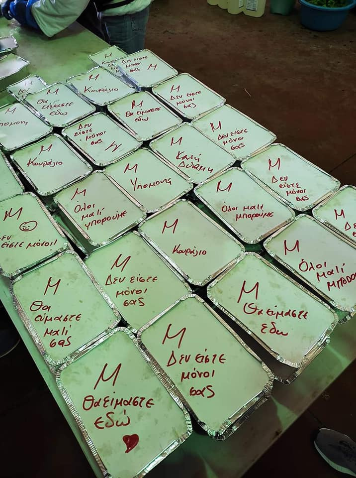

Financial help
Direct financial support helps cover the most urgent needs of families and local actions.
Support text


Support message
Apostoli Agapis is a purely volunteer group. It receives no state subsidy and depends entirely on people and organizations who believe in solidarity.
The goal of every appeal is simple: to keep standing beside families facing hardship with practical help, respect and care.
Seasonal campaigns and everyday actions help bring food, warmth and dignity to people who are struggling.
Ways to help
Direct financial support helps cover the most urgent needs of families and local actions.
Food, clothing and first-need items are turned into direct practical support for people in need.
Holiday and special campaigns help families celebrate with more dignity, warmth and security.
Businesses, schools and local organizations can become partners in practical solidarity.
Donations
If you would like to offer a financial donation, you can use the IRIS number below or the official bank account of Apostoli Agapis.
Recognition
Businesses and organizations that stand with the group may be acknowledged through the official social channels and local media appearances connected to the mission.
In this way, the social contribution of every supporter can become visible and encourage more people to participate.
Every contribution matters
Small or large, every contribution helps Apostoli Agapis continue its work with warmth, dignity and consistency.